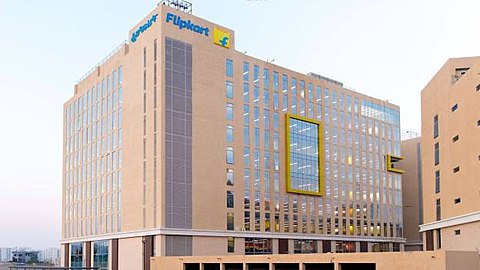

Flipkart is an Indian e-commerce company, headquartered in Bangalore, and incorporated in Singapore as a private limited company. The company initially focused on online book sales before expanding into other product categories such as consumer electronics, fashion, home essentials, groceries, and lifestyle products. The service competes primarily with Amazon's Indian subsidiary and domestic rival Snapdeal.[5][6] As of March 2017, Flipkart held a 39.5% market share of India's e-commerce industry.[7] Flipkart has a dominant position in the apparel segment, bolstered by its acquisition of Myntra, and was described as being "neck and neck" with Amazon in the sale of electronics and mobile phones.[8] Flipkart also owns PhonePe, a mobile payments service based on the UPI. In August 2018, American retail chain Walmart acquired a 77% controlling stake in Flipkart for US$16 billion, valuing Flipkart at around US$20 billion.
Flipkart was founded in October 2007 by Sachin Bansal and Binny Bansal, alumni of the IIT, Delhi and former Amazon employees.[10][11][12] The company initially focused on online book sales with country-wide shipping. Flipkart slowly grew in prominence and was receiving 100 orders per day by 2008.[13] In 2010, Flipkart acquired the Bangalore-based social book discovery service WeRead from Lulu.com.[14] In 2011, Flipkart acquired the digital distribution business Mime360.com[15] and the digital content library of the Bollywood portal Chakpak.[16] Following the acquisition, Flipkart launched their DRM-free online music store Flyte in 2012. Due to competition from free streaming sites, Flyte was unsuccessful and shut down in June 2013.[17][18][19][20] With its eyes on India's retail market, Flipkart acquired Letsbuy, an online electronics retailer,[21] in 2012, and Myntra, an online fashion retailer, for US$280 million in May 2014.[22] Myntra continues to operate alongside Flipkart as a standalone subsidiary focusing on separate market segments.[23] In February 2014, Flipkart partnered with Motorola Mobility to be the exclusive Indian retailer of its Moto G smartphone.[24] Motorola also partnered with Flipkart on the Moto E, a phone targeted primarily towards emerging markets such as India. High demand for the phone following its midnight launch on 14 May caused the Flipkart website to crash.[25] Flipkart subsequently held exclusive Indian launches for other smartphones, including the Xiaomi Mi 3 in July 2014 (whose initial release of 10,000 devices sold out in around 5 seconds),[26] and the Redmi 1S and Redmi Note in late 2014.[27][28][29][30] On 6 October 2014, coinciding with the company's anniversary and the Diwali season,[31] Flipkart held a major sale that it promoted as "Big Billion Day". The event generated a surge of traffic, selling US$100 million worth of goods in 10 hours. The event received criticism via social media over technical issues experienced during the event and stock shortages.[32][33][34][35] In April 2015, Flipkart acquired Appiterate, a Delhi-based mobile marketing automation firm. Flipkart stated that it would use Appiterate's technology to enhance its mobile services.[36] In December 2015, Flipkart purchased a minority stake in the digital mapping provider MapmyIndia.[37] In October 2015, Flipkart reprised the Big Billion Days event as a multi-day event exclusive to the Flipkart app. Flipkart bolstered its supply chain and introduced more fulfillment centers to meet customer demand.[38] Flipkart achieved a gross merchandise volume of US$300 million during the event, with the largest volumes coming from fashion sales and the largest value coming from mobiles.[39] In 2016, Flipkart acquired the online fashion retailer Jabong.com from Rocket Internet for US$70 million and the UPI mobile payments startup PhonePe.[40][41] In January 2017, Flipkart made a US$2 million investment in TinyStep, a parenting information startup.[42] In April 2017, eBay announced that it would sell its Indian subsidiary, eBay.in, to Flipkart and invest US$500 million in the company. While eBay suggested that the partnership would allow Flipkart to access eBay's network of international vendors, these plans never came to fruition.[43][44] In July 2017, Flipkart made an offer to acquire its main domestic competitor, Snapdeal, for US$700 to 800 million. It was rejected by Snapdeal, which was seeking at least US$1 billion.[45] In 2017, Flipkart sold 1.3 million phones in 20 hours on 21 September during its Big Billion Days promotion, doubling the number sold on the first day of the same event in 2016.[46] Flipkart held a 51% share of all Indian smartphone shipments in 2017, overtaking Amazon India (33%).[47] On 4 May 2018, it was reported that Walmart had won a bidding war with Amazon to acquire a majority stake in Flipkart for US$15 billion.[48][49] On 9 May 2018, Walmart officially announced its intent to acquire a 77% controlling stake in Flipkart for US$16 billion.[50] Following the purchase, Flipkart co-founder Sachin Bansal left the company. The remaining management team reported to Marc Lore, CEO of Walmart eCommerce US.[51] Walmart president Doug McMillon cited plans to help Flipkart with its sourcing and supply chain, while tapping on its expertise to expand Walmart globally.[52] Indian traders protested against the deal, considering it a threat to domestic business.[53][54] In a filing with the U. S. Securities and Exchange Commission on 11 May 2018, Walmart stated that a condition of the deal prescribed the possibility that Flipkart's current minority shareholders "may require Flipkart to effect an initial public offering following the fourth anniversary of the closing of the transactions at a valuation no less than that paid by Walmart".[55][56] Following the announcement of Walmart's deal, eBay announced that it would sell its stake in Flipkart back to the company for approximately US$1.1 billion and relaunch its own Indian operations. The company stated that "there is the huge growth potential for e-commerce in India and significant opportunity for multiple players to succeed in India's diverse, domestic market."[43] Softbank Group also sold its entire 20% stake to Walmart without disclosing terms of the sale.[57] Walmart's acquisition of 77% stake in Flipkart was completed on 18 August 2018. Walmart also provided US$2 billion in equity funding to the company.[58][59] On 13 November 2018, Flipkart CEO Binny Bansal resigned after facing an allegation of "serious personal misconduct". Walmart stated that "while the investigation did not find evidence to corroborate the complainant's assertions against Binny, it did reveal other lapses in judgment, particularly a lack of transparency, related to how Binny responded to the situation."[60][61] In August 2019, Flipkart partnered with Authentic Brands to license and distribute Nautica in India.[62] It was reported the same month that Flipkart entered talks to invest around US$40 million in last-mile delivery startup Shadowfax, which would be the company's third investment in the logistics sector after backing BlackBuck and QikPod.[63] The deal was completed four months later as a US$60 million financing round.[64] Flipkart invested US$4 million in the customer engagement and rewards platform EasyRewardz on 19 November 2019.[65][66] In 2020, Flipkart Wholesale launched a digital platform for kiranas and MSMEs.[67] In July 2020, Flipkart acquired a 27% stake in Arvind Fashions Limited's newly formed subsidiary Arvind Youth Brands for US$35 million. Arvind Youth Brands owns the Flying Machine brand.[68] Flipkart also announced it will roll out Flipkart Quick, a hyperlocal 90-minute delivery service for product categories such as groceries, home accessories, mobile phones, stationery, and more.[69] In October 2020, Flipkart acquired a 7.8% stake in Aditya Birla Fashion and Retail for US$204 million.[70][71] The following month, Flipkart acquired the intellectual property of gaming startup Mech Mocha for an undisclosed amount.[72] The acquisition formed part of Flipkart's plans to gain and retain users by offering casual games.[73] In November 2020, Flipkart acquired augmented reality company Scapic, which provides a suite of tools to create and publish augmented reality, virtual reality, and 3D content quickly and without coding.[74] In April 2021, Flipkart announced the acquisition of travel booking portal Cleartrip.[75] In July 2021, Flipkart launched its social commerce marketplace called Shopsy, which allowed individuals and small businesses to direct sell and resell products to customers via social media channels.[76] In December 2021, Shopsy entered the grocery delivery segment in 700 cities across India.